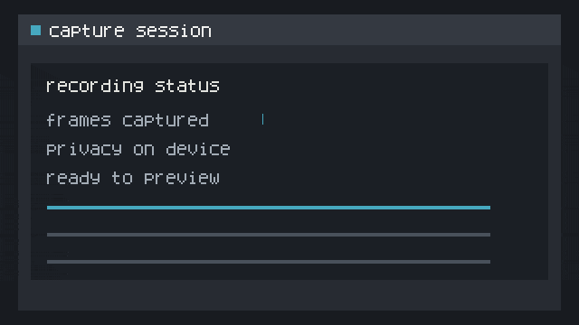
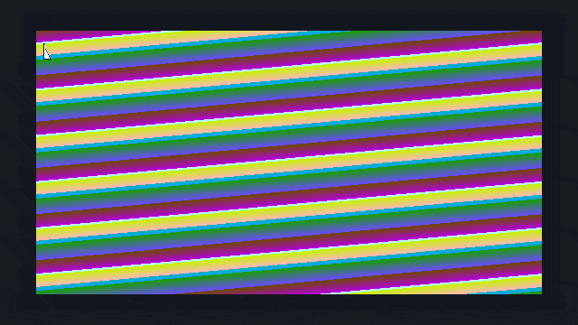
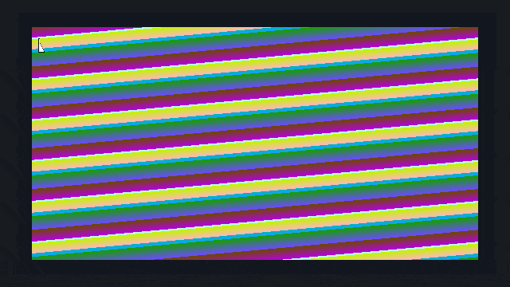
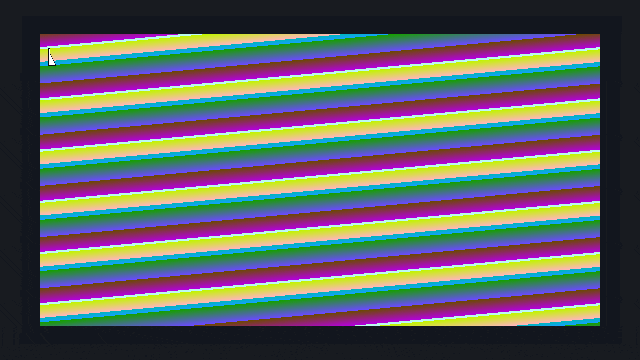
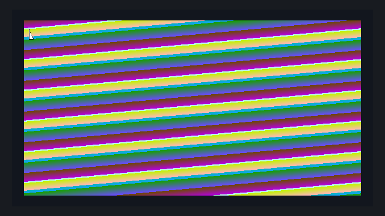

Gifski quality sweep
looping outputs from two synthetic profiles, encoded at quality 70, 80, 90, and 100. each animation uses the same 640 × 360, 240-frame, 24 fps input for its profile.
quality 90 is the baseline reference; its outputs match the existing full-matrix samples by SHA-256. the [existing animated quality-90 review](../gifski-magick-35-2026-10-24/index.html) remains available. the first frame is available as a still when motion is paused. if reduced motion is enabled in the system, the page starts paused. GIFs loop after ten seconds.
mostly static ui




high motion, gradients, and cursor








provenance and limits
exact flags, sample hashes, fixture hashes, timing records, and environment details are in the adjacent README and summary JSON. the tested settings change only Gifski --quality; inputs and frame timing remain fixed. output structure was checked for dimensions, frame count, duration, and infinite looping.
the three-run timing sample is indicative, not a stable benchmark claim. poster frames cannot assess full-animation quality; review the loops directly. this page makes no encoder selection or quality-floor conclusion.